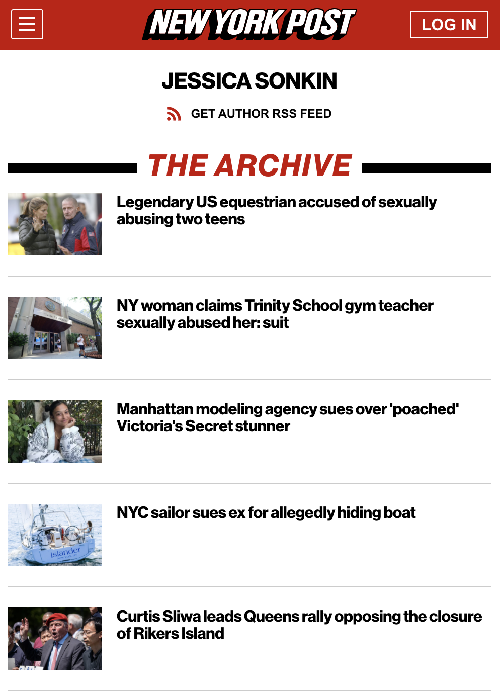

Click here to visit my archive on the New York Post website.
During the summer of 2021, I interned with the New York Post news team. I worked as a breaking news runner across New York City and reported on metro, crime, political and legal issues throughout city boroughs. A full list of published works can be found using the link above.
Click here to return to home page.